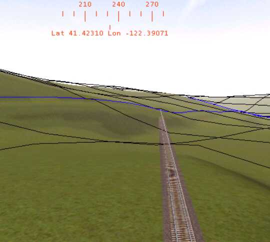
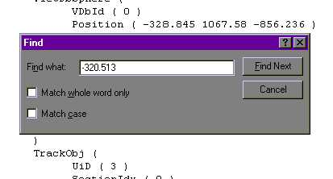

This procedure works best if your are currently laying track and you first lay the track across the area to be bridged, then you choose and place the bridge piece. (You can come back and place a bridge under some track that you laid some time ago, but it is not as easy.)
- Place the track that will have the bridge under it. Keep it selected, as shown below.
- You will need to write down some numbers from the Route Editor's Object Window.
- This gives some values that will be very important for finding the track. Write down the entire "x" value: -320.513. Also, write down the name for the track piece (like A1t500mstrt.s) for the track you just placed.
Press F7 and look at the Route Editor. Is the attached end of the track in the same blue outlined tile as the camera is? If so, good. If not, move the camera so that it is in the same tile as the attached end of the track (as shown below).

- Look at the Camera window.
There are two values here that you need to write down. The "tile x" value (-12956) and the "tile z" value (14398). Write down these values making sure you keep straight which value is which.
- Place your bridge. Do not worry about getting it positoned. Just place it close to the track as shown below.
As you can see, it doesn't matter that the bridge is sitting on the track. Write down the filename (like "RailBridgeX1.s") of the bridge piece that you placed. The bridge name can be found by selecting the bridge, right clicking on it, selecting "Properties", and reading what Shape File it is. Save your work and exit out of the Route Editor.
- Open Windows Explorer and move to the \World folder for your route. Notice the weird filenames.
The top filename in the graphic above starts with a "w" then has "-012956" followed by "+14398" and then concluding with a dot w. Notice that those are the numbers for the "x tile" and "z tile" that you wrote down, except for the leading zero for the x tile number. That is the world file for that tile.
Make sure you have a back up of this file!
- Open the file in WordPad. Remember the x value from the Object window that you wrote down? That was the x value for the track piece. Now you want to find that piece. So, in WordPad, select "Edit", "Find", and the type in the value. In this example:

- For the most part that value can be considered a unique identifier for the track piece. Click on "Find Next" and the following is found:
Notice that the filename, highlighted in blue, is the same filename you wrote down for the track piece.
"Copy" the entire line highlighted in yellow.
- Find the bridge piece. Go back to the World tile file in WordPad and search for the name of your bridge piece. When you do this, here is what you will find:
Note: If you placed the bridge piece last, it will probably be at the end of the "Static" objects.
- "Paste" the QDirection values you copied from the track to the bridge. Save the World file and exit WordPad.
- Open the Route Editor, load your route, and move to the location where you placed the bridge.
And there you have it. A perfectly aligned bridge!! (Now, just do NOT press F4)
Move your bridge around, positioning it under the track, etc., and immediately save your work.
At first, this looks like an awful lot of trouble just to align a bridge or platform. But, after a few times, it becomes so familiar that you can zip though the process in a couple of minutes, saving all that frustration of manual alignment.
"I want to sincerely thank Lawrence Kellie. I could not have built Sky City without this bridge alignment system."
Bill Burnett